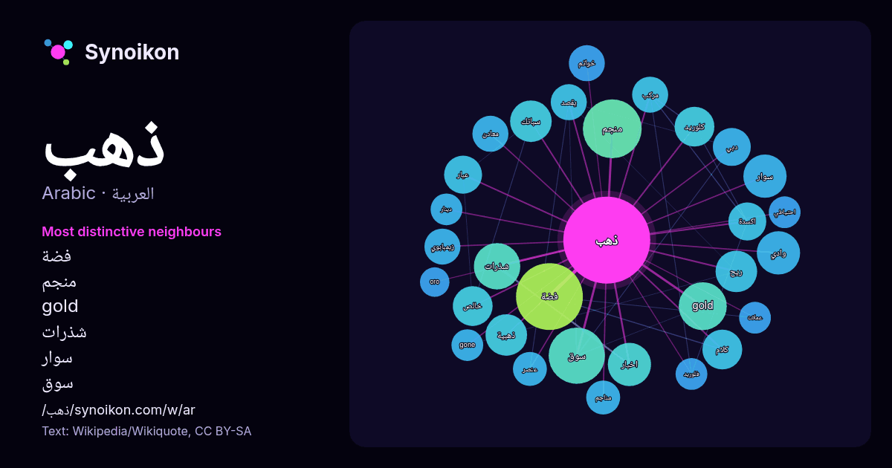

العربية · قائمة كلمات اليوم
ذهب
“gold” · الكلمات الموجودة حولها في 687 ورودًا من ويكيبيديا, Wikiquote.

الجيران الأكثر تميّزًا
- فضة 29×
- منجم 24×
- gold 17×
- شذرات 16×
- سوار 14×
- سوق 14×
- سبائك 13×
- ريح 12×
- خالص 12×
- كلوريد 11×
- اخبار 11×
- عيار 11×
- اكسدة 10×
- ذهبية 10×
- خواتم 9.9×
- كلام 9.8×
- زيمبابوي 9.5×
- دبي 9.2×
- مناجم 8.3×
- معادن 8.2×
× = كم مرة أكثر مما في نصوص ويكيبيديا العامة.
الجيران الأكثر تكرارًا
- فضة 31
- منجم 24
- سوق 22
- فيلم 22
- gold 16
- شذرات 15
- اخبار 13
- سوار 13
- وادي 13
- ذهبية 12
- ريح 12
- سبائك 12
- شركة 12
- قرية 12
- مدينة 12
- خالص 11
- كلام 11
- كلوريد 11
- ماء 11
- ارض 10
في السياق
- الذهب عنصر كيميائي رمزه Au وعدده الذرّي 79؛ وهو بذلك أحد العناصر القليلة ذات العدد الذرّي المرتفع والمتوفّرة طبيعياً في نفس الوقت. يوجد في الطبيعة على Wikipedia snippets · ذهب
- ذهب تعديل - تعديل مصدري - تعديل ويكي بيانات ذهب (الإنجليزية: Gold) هو فيلم إثارة أسترالي من إخراج أنتوني هايس وبطولة زاك إيفرون، سوزي بورتر وأنتوني هايس Wikipedia snippets · ذهب (فلم 2022)
- سلاسل ذهب مسلسل تلفزيوني سوري درامي بدأ عرضه لأول مرة بـ1 رمضان عام 1440هـ الموافق لـ6 آيار/مايو عام 2019م. مهيوب صائغ محنّك في سوق الذهب، يتميز بمعرفة Wikipedia snippets · سلاسل ذهب (مسلسل)
- ذهب في الليل تعديل - تعديل مصدري - تعديل ويكي بيانات ذهب في الليل (الإنجليزية: Gone in the Night) هو فيلم إثارة أمريكي لعام 2022، من إخراج إيلي هورويتز، Wikipedia snippets · ذهب في الليل (فلم)
- صفايح ذهب تعديل - تعديل مصدري - تعديل ويكي بيانات صفايح ذهب (الإنجليزية: Golden Horseshoes) هو فيلم دراما تم إنتاجه في تونس وصدر في سنة 1989. الفيلم من Wikipedia snippets · صفايح ذهب (فلم)
- قد يقصد من ذهب مع الريح : ذهب مع الريح : رواية للكاتبة الأمريكية مارغريت ميتشل. ذهب مع الريح : الفيلم الأمريكي الذي أُنتِج في عام 1939 عن رواية مارغريت Wikipedia snippets · ذهب مع الريح (توضيح)
- ذهب مع الريح (الإنجليزية: Gone with the Wind) فلم أُنتِج في عام 1939 عن رواية مارغريت ميتشل الشهيرة ذهب مع الريح. فاز الفلم بِـ 8 جوائز أوسكار، واختاره Wikipedia snippets · ذهب مع الريح (فلم)
- ذهب الليل أغنية لحنها وغناها الموسيقي المصري محمد فوزي (1918 - 1966) عام 1956 من كلمات حسين السيد. الأغنية موجهة للأطفال وتتألف من كلمات بسيطة، ولحن سهل Wikipedia snippets · ذهب الليل (أغنية)
كلمات أخرى
- أغنية
- إله
- تاريخ
- جبل
- جرس
- جزيرة
- جسر
- حديقة
- حصان
- حقيقة
- حياة
- خبز
- خريطة
- خريف
- زمن
- ساعة
- شاي
- شتاء
- صحة
- صحراء
- صمت
- صيف
- طبيعة
- طريق
- طعام
- ظل
- عائلة
- عاصفة
- عسل
- علم
- عمل
- غابة
- فن
- قطار
- قطة
- قلب
- قوة
- كلب
- لغة
- ماء
- مال
- مدينة
- مرآة
- مطر
- ملح
- مناخ
- موت
- نجم
- والدة
حُسبت مسبقًا في 2026-10-09 بالإعدادات الافتراضية (±5 كلمات، مدوّنة متوسطة). يمكن للخريطة التفاعلية تحديثها ببيانات حية.
واجهة مترجمة آليًا؛ نرحب بالتصحيحات.